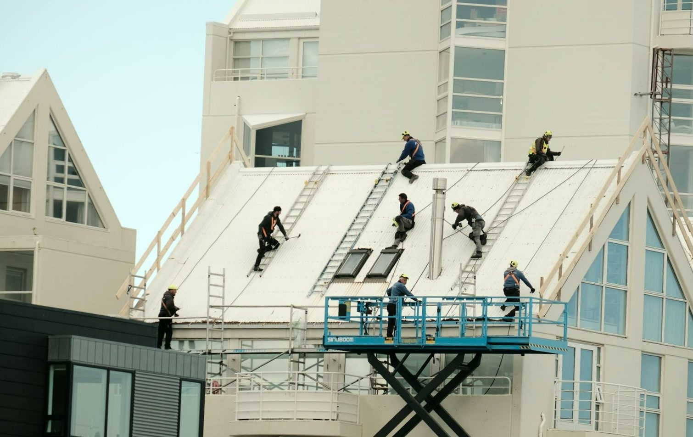
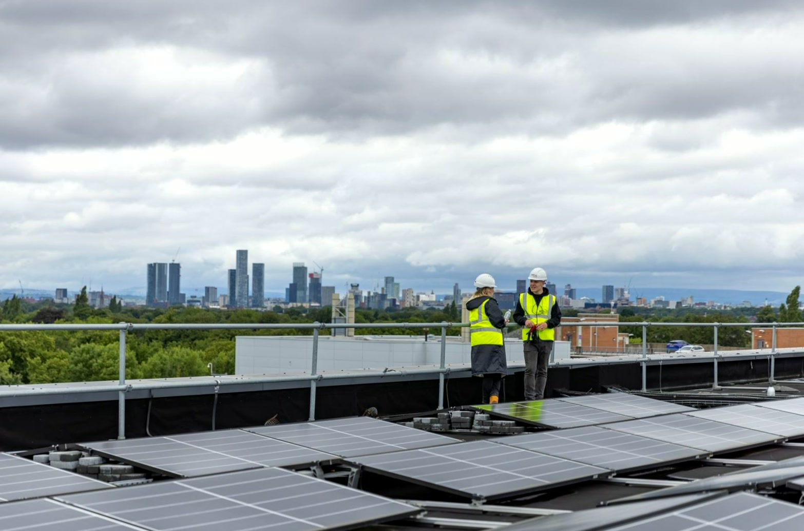
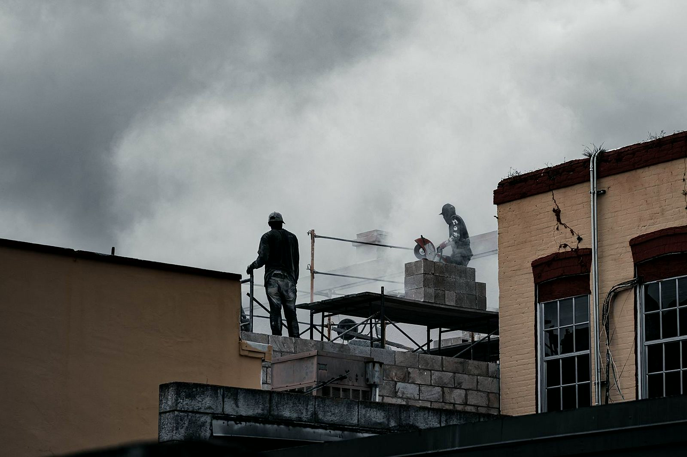
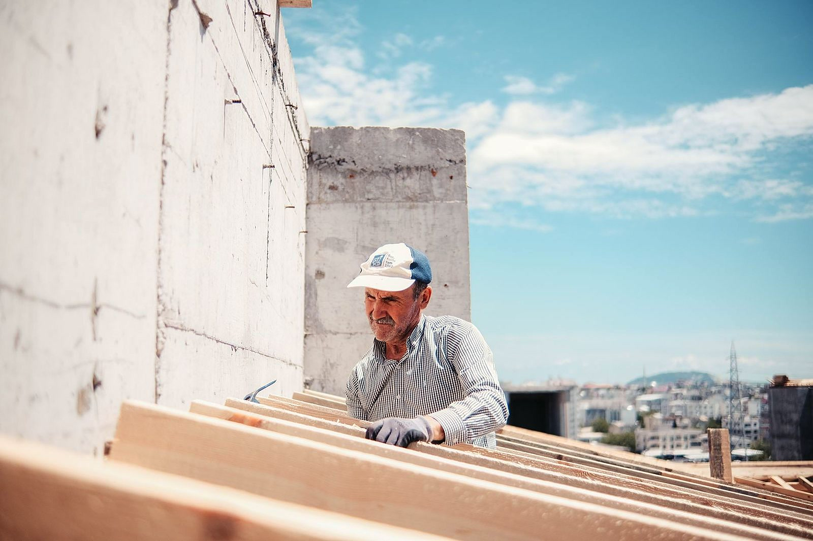
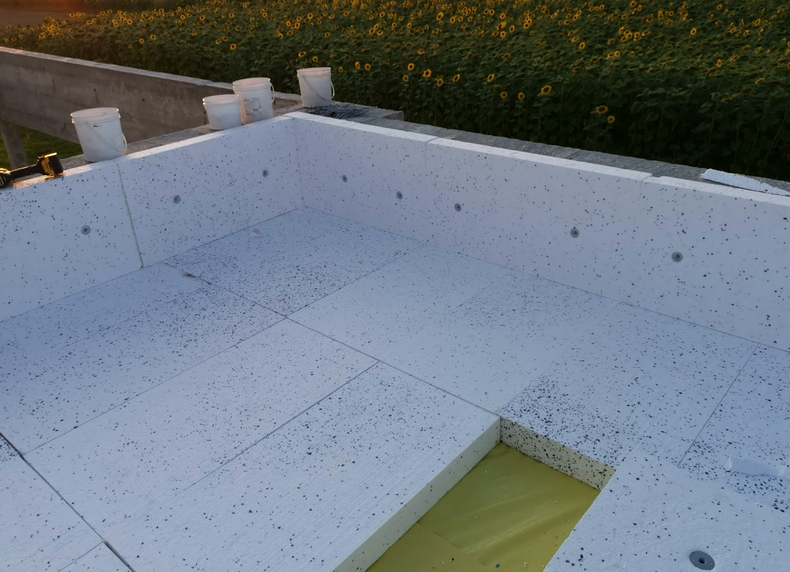
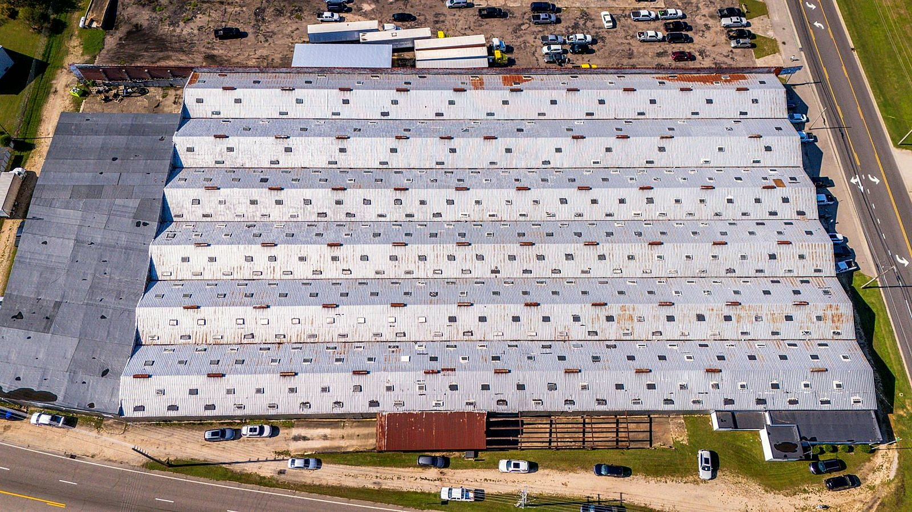
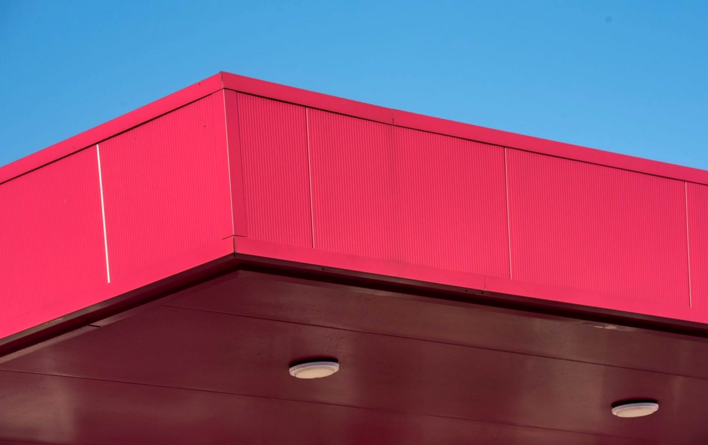

Zakres robót

Membrany PVC, EPDM i TPO
Nowa hala albo stary dach do wymiany? Kładziemy membranę mocowaną mechanicznie albo klejoną, razem z obróbką attyk, wpustów i kominków. Materiał dobieramy do podłoża i obciążenia wiatrem, a nie do tego, co zalega w hurtowni.

Remonty dachów płaskich
Ciemna plama na suficie po każdym deszczu? Szukamy miejsca, którędy naprawdę wchodzi woda - najczęściej to attyka, wpust albo łączenie, nie środek połaci. Naprawiamy przyczynę, a po pierwszym porządnym deszczu sprawdzamy, czy zostało sucho. Dopiero wtedy uznajemy robotę za skończoną.

Termoizolacja i odwodnienie
Pod nowe pokrycie kładziemy styropian albo wełnę ze spadkami, tak żeby woda schodziła do wpustów, a nie stała kałużami. Wpusty, przelewy awaryjne i obróbki robimy w jednym podejściu, żeby nie wracać na dach drugi raz.

Obróbki blacharskie i attyki
Zacieki na elewacji i woda lejąca się za kołnierz komina to prawie zawsze obróbka, nie pokrycie. Wyginamy blachę na wymiar i zamykamy attyki, kominy i dylatacje tak, żeby woda szła tam, gdzie ma iść. Elewacja zostaje sucha.

Świetliki i wyłazy dachowe
Pasma świetlne, klapy dymowe i wyłazy to miejsca, w których dach najczęściej puszcza. Osadzamy je na kominkach i zamykamy obróbką wywiniętą pod kołnierz, a nie doklejoną z wierzchu. Dzięki temu przy pierwszej wichurze nic się nie odgina.

Papy termozgrzewalne
Papę zgrzewamy pasami z zakładem, razem z obróbkami kominków wentylacyjnych i wpustów, a każdy zgrzew sprawdzamy, zanim zjedziemy z dachu. Na starym podłożu zaczynamy od sprawdzenia, co pod spodem - mokra izolacja pod nową papą to problem odłożony na rok.
Która z usług Cię interesuje?
Napisz, co chcesz zrobić - odpowiemy z propozycją i wyceną.